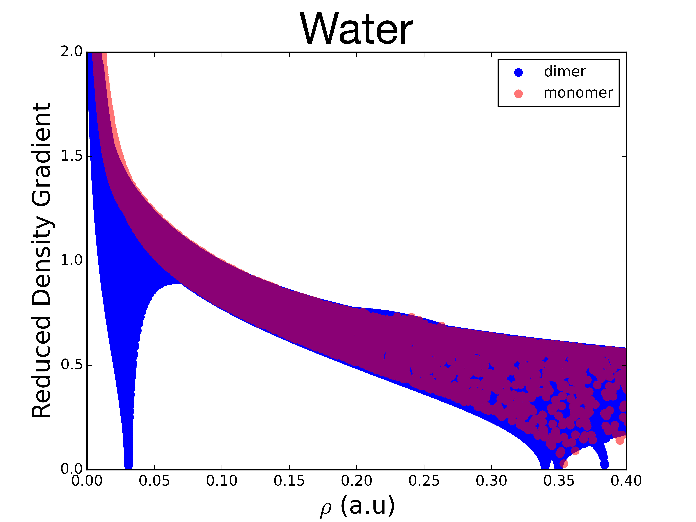
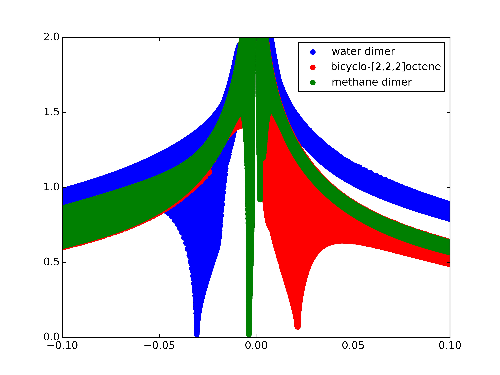
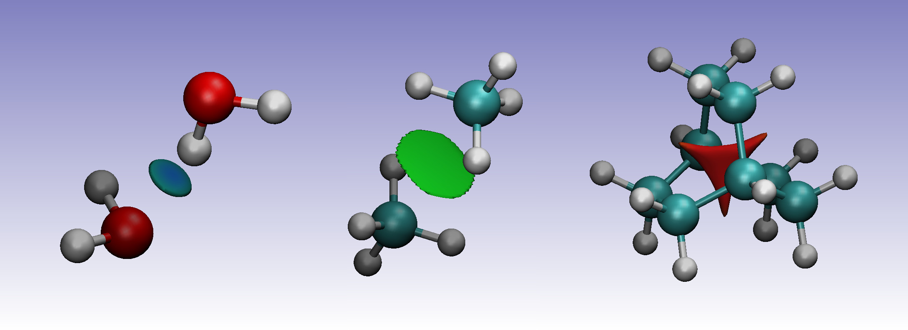

非共价相互作用（NCI） chemtools.tool.analysis.nci¶
NCI（非共价相互作用）是用来辨识非共价作用并使其可视化的工具。其中非共价作用包括范德华力，氢键以及位阻效应等。这些效应指数是基于电子密度及其偏导数的。
简化密度梯度是由电子密度和其一阶偏导数计算出的，
\[s\left(\mathbf{r}\right) = \frac{1}{2\left(3\pi ^2 \right)^{1/3}} \frac{\lvert \nabla \rho\left(\mathbf{r}\right) \rvert}{\rho\left(\mathbf{r}\right)^{4/3}}\]
是一个无量纲的函数，主要用于描述均相电子分布的偏差值。在远离分子的区域，电子密度成指数型地衰减至 0，此时的简化密度梯度是一个很大的正值。而在共价键和非共价作用区域，简化梯度的值就很小，接近于 0。
为了更好的研究非共价作用，我们扫描了实例中水的简化梯度 \(s\left(\mathbf{r}\right)\) 对电子密度 \(\rho\left(\mathbf{r}\right)\) 的图像：

对于单分子，左上角密度较小，简化密度梯度较大的点对应于电子密度远离原子核的尾部区域。而在右下角点则有着较大电子密度（大约在 0.35 a.u.）却接近于0的简化密度梯度。
对于双聚分子，我们可以看到一个新的结构，在低密度，低梯度的地区出现了一个尖峰，这是一个非常典型的非共价相互作用。这个特征出现的原因是因为在非共价相互作用区域，简化密度梯度（和共价键类似）退减为0，但是由于非共价作用的本质，电子密度在这个区域也是远低于普通共价键的（小于 0.05 a.u.)。
电子密度拉普拉斯量的符号 \(\nabla^2 \rho\left(\mathbf{r}\right)\) 可以用来决定相互作用的类型。首先，要计算电子密度海森矩阵（二阶微分）的三个特征值 \(\lambda_i\) ，得到 \((\lambda_1 \leq \lambda_2 \leq \lambda_3)\) 。在原子核处，所有的特征值都是负值，因为电子密度处于局部最大值。处于共价键时，海森矩阵的特征值中有一个为正值，其余两个为负值 \(( \lambda_1 < 0, \lambda_2 < 0, \lambda_3 > 0)\) 。另一方面，在某些有空间位阻亦或是受到区域原子间阻力时（例如二环[2.2.2]辛烯及环或笼状结构的零界点）会有第二个正的特征值。因此，第二个特征值的符号可以用来区分化学键 \((\lambda_2 < 0)\) 或是非键作用 \((\lambda_2 > 0)\) 。这些作用的强弱可以通过电子密度来判断：在非共价作用区域，高电子密度对应于较强的相互作用。因此，NCI方法依赖于审视简化密度梯度对 \(\text{sign}(\lambda_2)\rho\left(\mathbf{r}\right)\) 的图像。

这些图像可以通过ChemTools NCI工具中的 .plot('filename') 函数得到。
二聚水分子在负电子密度区域显示了一个比较低的简化密度梯度尖峰，这表示在该区域有用于稳定结构的氢键存在。二聚甲烷分子的尖峰则非常接近0，但由于弱地色散力作用，仍然有一个负值 \(\text{sign}(\lambda_2)\) 。另一方面，二环[2,2,2]辛烯由于空间位阻原因，在其分子的中间位置有一个正的尖峰。
如果想要可视化相互作用的区域，则需要研究低简化密度梯度时的等值面。这些梯度等值面根据他们 \(\text{sign}(\lambda_2)\rho\left(\mathbf{r}\right)\) 的值被加上了不同的颜色。 \(\text{sign}(\lambda_2)\rho\left(\mathbf{r}\right)\) 为较大负值的区域在图中是蓝色的，表示相互吸引的非键作用，例如取向力或是氢键；而正值的红色区域则表示非键，空间位阻冲突的区域；而值接近于0的区域则表示相对较弱的非键相互作用，例如 \(\pi\)-\(\pi\) 重叠或是范德华力。

在二聚水分子中，等值面在氢原子和氧原子之间形成了一个蓝色的小圆环。而在二聚甲烷分子中，等值面在两个分子间形成了某种形状的大圆环。其中绿色的部分该区域的电子密度小于二聚水分子，表示两个单分子之间色散力较弱。最后，在位阻拥挤的二环[2,2,2]辛烯中，在其中间有一个等值面，体现了碳原子的空间斥力。
在ChemTools中，可以通过 .dump_files('filename') 函数生成这些图片。查看新手教程和样例图库了解详细方法。
待处理
Add link to tutorials and example gallery once these are in their final form.
参考文献
- E.R. Johnson, S. Keinan, P. Mori-Sánchez, J. Contreras-García, A.J. Cohen, and W. Yang. Revealing noncovalent interactions. J. Am. Chem. Soc., 132(18):6498–6506, 2010. doi:10.1021/ja100936w.